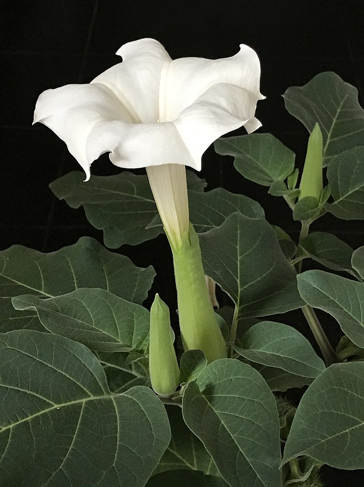

Datura Tea

Although potentially dangerous for nonexpirienced users,
Datura Innoxia tea can if taken in moderation can be psychodelic.
Ingredients
- 1 Datura Innoxia pod full of seeds
- 3dl of water
- four teaspoons of sugar
Instructions
- take the seeds out of the pod and put them in the kettle
- add about 3dl of water
- let it boil for 5-10 minutes
- take a strainer and remove the seeds
- add sugar
Voila! You can now mix your datura tea with alcohol or weed to get the best effect.
Beware of the drymouth and blury vision!
back